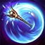
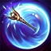

Passive
ILLUMINATION
Lux's damaging spells charge the target with energy for a few seconds. Lux's next attack ignites the energy, dealing bonus magic damage (depending on Lux's level) to the target.
Q
LIGHT BINDING
Lux fires a ball of light, Rooting the first two enemies for e3 seconds and dealing totaldamagett magic damage to each..
W
PRISMATIC BARRIER
Lux throws her wand, granting total shield for e3 seconds to allies it passes through. Then it returns, granting the same Shield on its return.
E
LUCENT SINGULARITY
Lux creates a light zone that Slows by e1% and reveals the area. After e3 seconds or on Recasting this Ability, it detonates, dealing totaldamagett magic damage and Slowing for an additional slowlingerduration second.
R
FINAL SPARK
Lux fires a dazzling ray of light, dealing total damage magic damage to all enemies in a line.